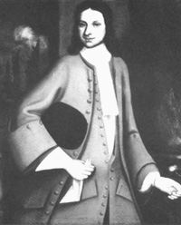

|
by Stefan Bielinski Scottish-ancestry Robert Sanders was born in July 1705. He was the eldest son of Albany merchant Barent Sanders and his wife Maria Wendell Sanders. Robert followed his father in the fur trade. During the peace of 1713-44, he ranged into the Indian country and to New France where he furthered family business connections.  By 1740, the trader had become a businessman. He settled in Albany where he married Maria Lansing - the twenty-three-year-old daughter of an Albany merchant. At age thirty five, he was more than a decade older than most Albany grooms. The marriage was short-lived and ended when Maria died in 1743 following the birth of her first child. Robert Sanders remarried in 1747. His second wife was Elizabeth Schuyler - a twenty-two-year-old daughter of Albany's foremost pioneer family. Beginning a family at age forty-one, his eight children were baptized between 1747 and 1761 in the Albany Dutch church where both parent were members and pewholders. Heir to an extensive estate, Sanders was emerging as an important Albany merchant, Canada trader, and landholder. His career benefitted from the business and patronage of regional magnate William Johnson. At the same time, he cemented community ties by serving as constable and firemaster in the second ward. But his marriage to the daughter of the temporarily leaderless Schuyler family set the stage for advancement to the highest ranks in Albany circles. In 1748, he was recognized by the governor with an appointment as recorder or deputy mayor. In 1749, he was named judge of the county court of common pleas. And in 1750, Robert Sanders was appointed mayor of Albany. His administration hosted the Albany Congress and witnessed the outbreak of the last of the French and Indian Wars. Later in 1754, he was replaced by Albany mainstay Hans Hansen. Now in his mid-fifties, Sanders fell back on his business and management of the lands inherited from his late father. His wife died in 1763 - leaving him to raise their young family. At home on Pearl Street, Robert Sanders made his will on May 17, 1765. It provided the five living children with extensive real and personal property. Although claiming he was "in good health" just two weeks earlier, he died later that month and was buried in the church cemetery. Without surviving sons, the Albany end of Sanders business interests fell to son-in-law, Philip Van Rensselaer. The career of Robert Sanders marked a high point for the family in early Albany history.
Business with Canada is described in David Armour's The Merchants of Albany, pp. 266-67. In 1805, his remains were relocated to the Sanders family cemetery in Scotia. first posted: 02/11/02 |